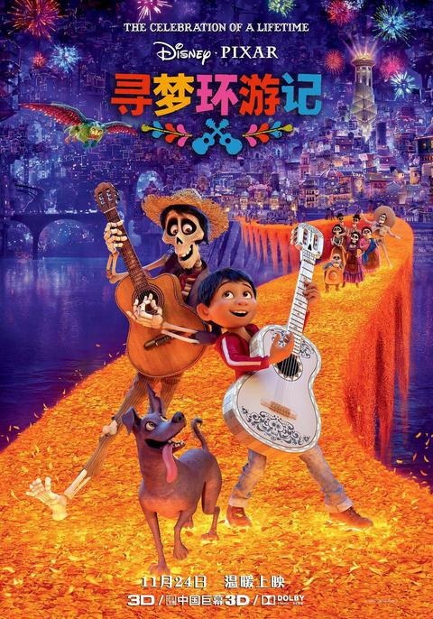

导演：李·昂克里奇
编剧：阿德里安·莫利纳 / 马修·奥尔德里奇
主演（配音）：安东尼·冈萨雷斯 / 盖尔·加西亚·贝纳尔 / 本杰明·布拉特
类型：动画 / 奇幻 / 音乐
制片国家/地区：美国
语言：英语 / 西班牙语
上映日期：2017-11-24（中国大陆）/ 2017-11-22（美国）
片长：105 分钟
热爱音乐的墨西哥小男孩米格出生在制鞋世家，家人却因高祖父当年抛妻弃女追寻音乐梦而世代禁止接触音乐。亡灵节之夜，米格意外闯入五彩斑斓的亡灵世界，必须在日出之前得到家人的祝福才能返回人间。他与落魄乐手埃克托一路同行，逐渐揭开家族尘封多年的秘密，也明白了"真正的死亡是被遗忘"的含义，唱出了一曲关于亲情、梦想与记忆的赞歌。